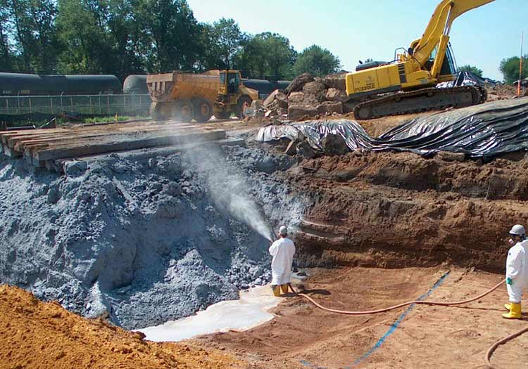
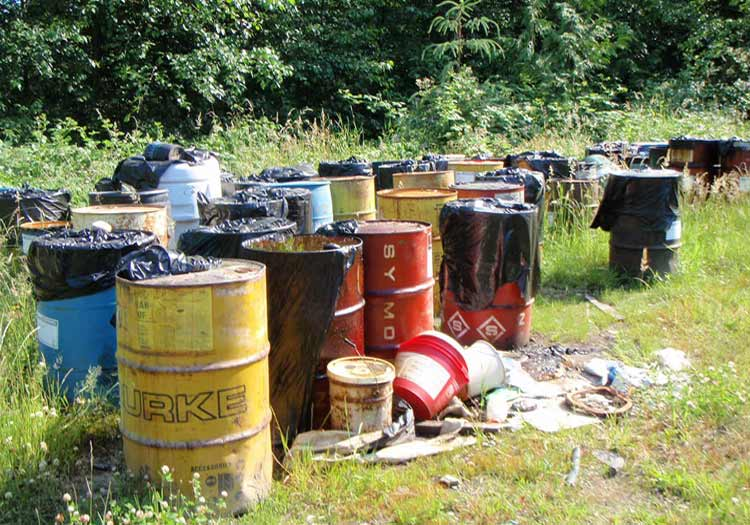
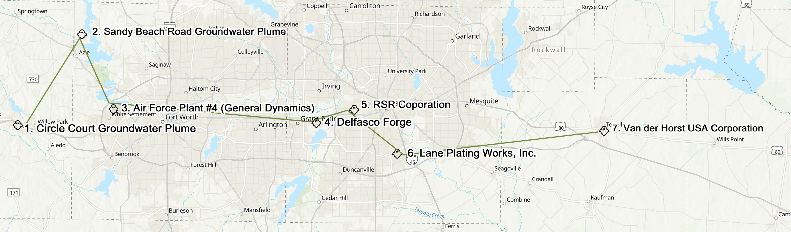

Superfund Halloween Tour
 
Follow the ghosts if you dare, and stay in your car for a toxic scare
2020 has been a pretty scary year already, but it’s not over before we celebrate the most haunted night of the year. On October 31, many of us will be hunkered down in our homes, watching a scary movie, and having candy for dinner. While this may sound like an average night in 2020, on Halloween, the ghosts and ghouls give you an extra reason to stay inside. So, turn off the lights and clutch your wine bottle close to your chest, because if the Haunted Houses aren’t open, their residents are coming to yours.
If you are brave enough to venture outside this late in October, just as the scarecrows are stretching their legs, we’ve got a terror you may not have known about: toxic waste sites.
The Superfund Halloween Tour is a spooky and COVID-safe activity to do with your family or friends this season.
Superfund sites are toxic waste sites that currently threaten or have the potential to threaten human health or environmental safety. The most hazardous of these sites are placed on the National Priorities List, and this tour takes you to seven of them, all around Dallas, Texas.
If you’re nearby, we encourage you to drive by and take a look. You can print out the map and check off each ghost as you get to the site!
,
Also, check out the crossword puzzle before to crack a hidden message. Each letter with a number corresponds to a number at the bottom of the page. Find all the letters to unlock the message.
For the Kids!
Now, the Sites
Circle Court Groundwater Plume, Willow Park, TX
What’s a groundwater plume? A groundwater plume is groundwater contaminated with hazardous substances.
What happened at this site? The city of Willow Park first detected trichloroethylene (TCE) in a public water supply well in 2006, and in 2010, the Texas Commission on Environmental Quality (TCEQ) found several drinking water wells with TCE contamination exceeding federal drinking water standards. In the short-term, TCE can cause dizziness, nausea, and headaches. Long-term, it can cause cancer, liver damage and death from high enough exposure.
Has this site been cleaned up?Public drinking wells now have filtration systems and have been put back into use. According to the EPA, residents whose wells had high levels of TCE are now using either the filtrated public water system or their own filtration system.
What makes this site extra spooky? We still don’t know the source of the groundwater contamination, so we can’t know the full extent of the contamination. Investigations are ongoing to determine the source and extent of the contamination. These investigations are expected to be complete one year from now, so we’ll check up on them next spooky season!
Crossword Clue: A new vocabulary word may lead you to number two
| Address | 117 Circle Court, Willow Park, TX 76087 |
| Contaminant | Trichloroethylene (TCE) |
| Size | Unknown |
| Became NPL Site | 09/18/2012 |
| Long-Term Cleanup Started | Estimated Jun - Aug 2022 |
| Construction Completed | No |
| Human Exposure Under Control | Yes |
| Groundwater Migration Under Control | No |
Sandy Beach Road Groundwater Plume, Pelican Bay, TX
Not far from the Circle Court Groundwater Plume is the Sandy Beach Road Groundwater Plume. According to the EPA, disposal activities at a nearby dumpsite caused the groundwater plum to affect “three public water supply wells and at least 12 residential drinking water wells.” with TCE.
The EPA has since connected those residences to uncontaminated municipal wells, and long-term cleanup is ongoing. The long-term remedy includes pumping and treating groundwater, soil vapor extraction, and the replacement of contaminated water supply wells.
Unlike the Circle Court Groundwater Plume, the EPA has determined the source and extent of contamination at this site, but the spooky part is that it is also contaminated with TCE, and has contaminated drinking wells.
The site is pretty small in comparison to some of the other sites, so if you want to see a little more of the area, check out Pelican Park that’s just a few minutes away.
| Address | 1653 Jason Court, Pelican Bay, TX 76020 |
| Contaminant | Trichloroethylene (TCE), dichloroethene |
| Size | Half-square-mile |
| Became NPL Site | 09/14/2005 |
| Long-Term Cleanup Started | 09/26/2014 |
| Construction Completed | No |
| Human Exposure Under Control | Yes |
| Groundwater Migration Under Control | No |
Air Force Plant #4 (General Dynamics), Fort Wayne, TX
Since 1942, this 760-acre facility manufactured military aircrafts, which contaminated the soil and surface and groundwater with hazardous chemicals, including TCE, chromium, copper, lead, and zinc.
The facility is currently owned by the U.S. Air Force, and the area surrounding the site is mostly residential, including multiple schools within a 3-mile radius. The remedy included installing a barrier across part of the groundwater plume contaminated with TCE, pumping and treating groundwater, and soil vapor extraction.
Now for the spooky part. Although construction was completed in 2006, the site’s final cleanup action is estimated to begin by February 2023. This is likely because of a scheduled change to the cleanup plan decision, which is expected to occur between December 2021 and February 2022.
| Address | Grants Lane, Fort Worth, TX 76108 |
| Contaminant | Trichloroethylene (TCE), chromium, copper, lead, nickel, pyrene, benzene, zinc |
| Size | 760 acres |
| Became NPL Site | 08/30/1990 |
| Long-Term Cleanup Started | 08/01/1999 |
| Construction Completed | 09/15/2006 |
| Human Exposure Under Control | Yes |
| Groundwater Migration Under Control | Yes |
Delfasco Forge, Grand Prairie, TX
This Superfund site is new to the National Priorities List, and so there’s a lot of information still unknown about the dangers at the site. However, the EPA does know that ammunition manufacturing and forging operations by the former Delfasco Forge facility contaminated indoor air at nearby residences. Once the EPA became aware of the contamination, they immediately implemented air filtration to residences affected.
The Delfago Forge facility stopped operating in 1998, and now you can see a middle school, a concrete contractor, and a used auto sales dealer in the area. Over 30 homes in the area have had the vapor mitigation system installed.
The Halloween horror at this site is the fact that the contamination got into the indoor air at dozens of nearby residences, and long-term cleanup hasn’t yet begun, so we don’t know how bad the contamination is yet.
| Address | 114 NE 28th Street, Grand Prairie, TX 75050 |
| Contaminant | Tetrachloroethylene, trichloroethylene (TCE), cis-1,2-dichloroethene, trans-1,2-dichloroethene, 1,1-dichloroethene, and vinyl chloride. |
| Size | Not reported |
| Became NPL Site | 09/13/2018 |
| Long-Term Cleanup Started | No |
| Construction Completed | No |
| Human Exposure Under Control | Insufficient Data |
| Groundwater Migration Under Control | No |
RSR Corporation, Dallas, TX
Waste material from the RSR Corporation’s metal smelting operation was sent to nearby landfills, where it contaminated soil, sediment, and water. To make matters worse, wind carried lead dust from the facility into nearby areas, including schools, residences, and parks. Prior to the site’s placement on the National Priorities List, the EPA “cleaned up the yards of over 400 properties between 1991 and 1994.”
Although the site has not been deleted off the National Priorities List, it won’t look like other sites you’ve seen on the tour. The Dallas Housing Authority and Goodwill Industries, a non-profit that helps people to find jobs, took the lead on cleaning up this Superfund site, building the headquarters of the Goodwill Industries of Dallas, a YMCA, Habitat for Humanity, and more housing options where the contaminated lead smelting operation once resided.
While you’re in the area, though, check out the Goodwill Thrift Store and Donation Center next door for costumes and Halloween decorations, or maybe get rid of some of those costumes that are tucked away in the back of your closet with the ghosts.
| Address | Westmoreland Rd and Singleton Blvd, Dallas, TX 75212 |
| Contaminant | Antimony, arsenic, cadmium, lead |
| Size | Not reported |
| Became NPL Site | 09/29/1995 |
| Long-Term Cleanup Started | 06/22/2000 |
| Construction Completed | 09/28/2004 |
| Human Exposure Under Control | Yes |
| Groundwater Migration Under Control | Yes |
Lane Plating Works, Inc. Dallas, TX
The Lane Plating Works, Inc. Superfund site was formerly an electroplating facility that contaminated soil and groundwater with waste from plating operations.
You won’t see much at the site, because the EPA and the Texas Commision on Environmental Quality (TCEQ) removed hazardous liquid and sludge from the site between 2014 and 2016. Long-term remediation is required, however, for soil and groundwater contamination.
What you will find in the virtual tour if not in real life, are some horses grazing at the site. Although the EPA reports that “Contaminant levels in on-site soils exceed the EPA Regional Screening Levels for residential and industrial use,” this rule must not apply to horses.
| Address | 5322 Bonnie View Road Dallas, TX 75241 |
| Contaminant | Cyanide, lead, mercury, chromium and hexavalent chromium |
| Size | Not reported |
| Became NPL Site | 05/17/2018 |
| Long-Term Cleanup Started | No |
| Construction Completed | No |
| Human Exposure Under Control | Yes |
| Groundwater Migration Under Control | Insufficient Data |